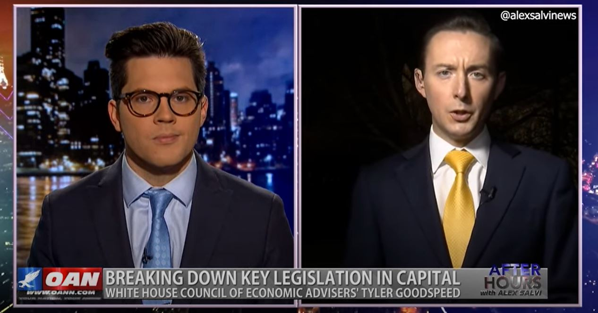

COVID Economy with Tyler Goodspeed
After Hours
After Hours catches up with Tyler Goodspeed – acting chair of the White House Counsel of Economic Advisers – to discuss the U.S. approach coming out of an economic crisis.
Join the conversation @ https://www.facebook.com/groups/alexsalvi
Posted On: 2020-12-07T00:00:00

Content Date: 2020-12-07
Download Date: 2021-04-16
Document ID: L0C049VVZ